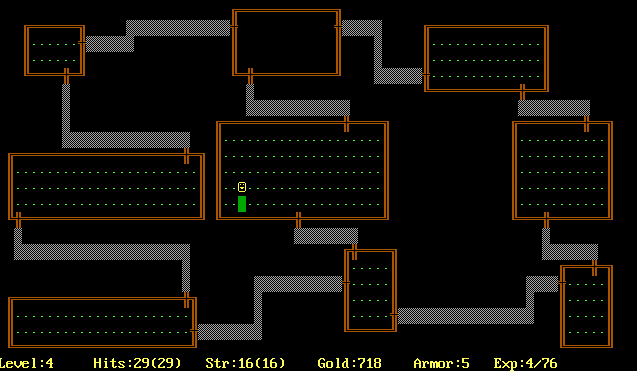

过程化生成（procedural generation）
是计算机科学中一种使计算机自动制造一类数据的算法。在电子游戏领域中用于自动制造大量游戏内容。过程化生成有着减小文件体积、扩大内容量、增强游戏随机性等优点。过程化生成的好处是仅要很小的函数和源数据，便可以制造出很多和源数据有关或类似但存在不同的新数据。电子游戏借助它可出现许多（接近无限）个关卡。这可以缩短开发时间，也可以减小软件的文件大小。
很多游戏中都使用了过程化生成算法：
- Rogue(1980) 
- 暗黑破坏神II（2000）
Tiles, like “Splunky”
- 我的世界（2011）
generates their terrain
- 无人深空（2016）
generates all different things
- Dwarf Fortress(2006)

generates the whole world
通过例子来引入
应用在《Bad North》和《Townscaper》中，用来实现程序自动生成的算法，Wave Function Collapse Algorithm.
collapse 坍缩的解释：
- 波函数的坍缩
- 量子力学
波函数解释：在量子力学中，量子系统的量子态可以用波函数来描述。波函数是复值函数$\Psi(r,t)$，表示粒子在位置$r$、时间$t$的概率幅，它的绝对值平方是在位置$r$、时间$t$找到粒子的概率密度。位置空间波函数、动量空间波函数互为傅里叶变换。
和项目对接（吹牛逼专用栏）
项目采用回合制战斗，系统组大部分开发工作是在 ugui 上。在主线界面中，及抽卡系统中，会有城市全景画面，目前来说这个场景是完全通过场景同学手工制作得到的。为了
并非从零开始生成一个每次都不尽相同的场景，类似《刺客信条》等大型开放世界中的各种互动元素，场景中的元素，通过自动生成算法可以在增加场景细节丰富度的同时降低成本。
技术难点（技术壁垒，你觉得主要的困难是，你觉得你做的工作里很牛逼的是）
- 如何避免重复感？ - 自动生成的例子（No man’s sky）
- 如何针对不同情景设计合理的算法？ - 并无通用方案。
- 如何与人工结合？ - 算法不能破坏人工部分，GDC2018刺客信条分享测试团队如何用自动化思路发现自动生成和人工内容冲突（看游戏的bug数似乎说服力不强啊）
相关算法的文献综述
| 方法 | 描述 | 解决的问题 | 缺陷 |
|---|---|---|---|
| WFC | |||
| ConvChain | |||
| DeadCell | |||
| Spelunky |
分享一些资源
一些资源图：Oskar Stålberg（@OskSta）
https://twitter.com/i/status/1279107097108635649
https://twitter.com/OskSta/status/1246729301434798080
https://twitter.com/OskSta/status/1228331649060024325
https://twitter.com/OskSta/status/1227650434602610688
city generator:
http://oskarstalberg.com/game/CityGenerator/
wfc 可交互版本（Oskar Stalberg made an interactive version of the tiled model that runs in the browser.）：
http://oskarstalberg.com/game/wave/wave.html
Nick Nenov made a visual guide to the tile symmetry system.
Marian Kleineberg created a city generator based on the tiled model for Procjam 2018. He wrote an article describing his approaches to setting adjacencies, backtracking and the online variation of WFC.